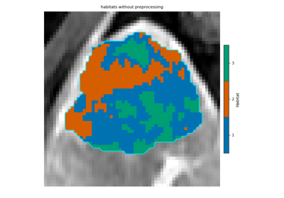

Habitat Guide
One scientific task per page. Copy the Python, swap DATA /
MODALITIES / ROI. Figures on a page come from that page’s
plot_* call.
Every example loads the official pack with
fetch_demo() (downloads once). CLI / YAML:
Quickstart: run the demo (YAML + CLI) and CLI and YAML.
1. Data In
Every route ends in a Cohort. Each page shows
two assemblies: Cohort([one_subject]) and Cohort([several_subjects]).
Pass that cohort to fit / fit_predict. A Python list is not a cohort.
Pick the page that matches the files you already have.
HABIT directory —
images/<subject>/<series>/<one file>andmasks/<subject>/<roi>/<one file>. One series or several. The mask folder name can differ from the series name. Load from directory.Loose NIfTI, NRRD, or MetaImage — one pair or many. You choose the series name and the ROI name. Image and mask grids may differ. Load from NIfTI files.
SimpleITK images already in memory — Load from SimpleITK.
NumPy arrays or deep-learning tensors — axis order
(z, y, x), integer mask,0= background. Load from NumPy arrays.
DICOM, and series that still need resampling or bias correction, are not a load route. Preprocess them first (Preprocessing), then use the directory page. The official demo pack is already preprocessed.
read_image / read_mask accept what SimpleITK reads
(.nii, .nii.gz, .nrrd, .mha, .mhd).


2. Voxel Representation
Define the voxel field that clustering sees: raw intensities, custom formulas, texture maps (CPU vs GPU), clustering-feature preprocessor chains, and supervoxel feature extraction and acceleration.


3. Precise Feature Screening
Repeatability and reproducibility screening (Prior et al., 2024): simulated image retest perturbation (noise, translation, rotation) and ROI contour edge perturbation, evaluated across kernel radii and bin widths with multi-panel ICC forest plots.

4. Habitat Mapping
A habitat map is a label volume. Integer ids are arbitrary until two maps share one fitted model, or until labels are matched after the fact.
Use at least two subjects for two-step and for pooling. One subject has no shared cohort to fit. Applying a saved model to a validation cohort keeps the training definition. Fitting that cohort again creates a different definition. Do not compare colours across the three design pages until labels have been matched.
Choosing how habitats are defined
Same modalities (LAP), fixed n_habitats=3, one overlay and one
volume table on each page.
Defining habitats in two steps (partition, then a shared model) — Defining habitats in two steps.
Defining habitats inside each subject (ids do not match across people) — Defining habitats inside each subject.
Pooling voxels across the cohort (no supervoxels) — Pooling voxels across the cohort.
Applying a saved habitat model — Applying a saved habitat model.
Matching habitat labels across fits — Matching habitat labels across fits.
Building a habitat map step by step
VoxelFeatureField → Supervoxelization → HabitatModel →
HabitatMap → FeatureTable. Each page names its input, its output,
and the HabitatSpec stage.
Extracting voxel intensities — Extracting voxel intensities.
Extracting a voxel texture — Extracting a voxel texture.
Clustering habitats from a derived map — Clustering habitats from a derived map.
Clustering habitats from a texture field — Clustering habitats from a texture field.
Preprocessing features before clustering — Preprocessing features before clustering.
Comparing habitat maps with and without preprocessing — Comparing habitat maps with and without preprocessing.
Partitioning a ROI into supervoxels — Partitioning a ROI into supervoxels.
Fitting a cohort habitat model — Fitting a cohort habitat model.
Assigning habitat labels — Assigning habitat labels.
Clustering habitats inside one subject — Clustering habitats inside one subject.
Measuring habitats on a label map — Measuring habitats on a label map.
Chaining the steps — Chaining the steps.
MSI, ITH, graphs, and radiomics stay in 5. Habitat Quantification. DICOM stays in 1. Data In.



Comparing habitat maps with and without preprocessing
5. Habitat Quantification
Quantify habitats with atomic functions: volume and fractions, multiregional spatial interaction (MSI, Wu et al. 2018), intratumoral heterogeneity (ITH), graph topology networks, per-habitat radiomics, whole-habitat radiomics, and deep-learning masked embeddings.


6. Parallel runs
HabitatSpec is what to compute.
RunPolicy is how to schedule it.
The same cohort and the same fit_predict call take a different
backend. A fixed random_seed keeps the maps aligned with a serial run.
One machine, in order — Running a cohort serially.
One bad case should not stop the batch — Skipping a subject that fails.
A bad case should stop the batch — Stopping at the first failure.
A crashed run should skip finished subjects — Resuming finished subjects.
Several CPU workers — Running subjects in separate processes.
Do not pay worker startup twice — Reusing workers across passes.
One worker per GPU (recorded timings, not re-run here) — Running a cohort on several GPUs.
A per-subject time limit is enforced only by the process backend. It is set on the process-pool page.